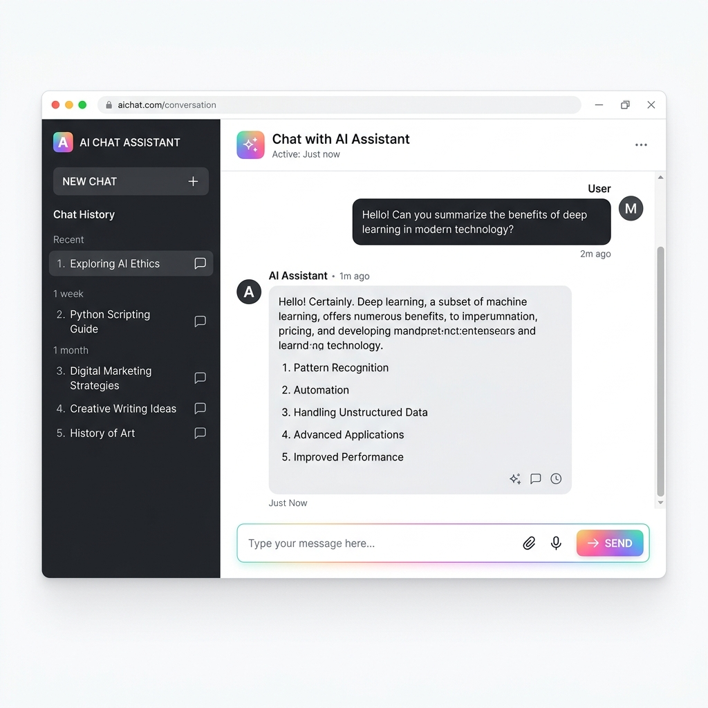

🧭
🎯 本階段目標：從模糊的想法變成具體的「主題式」旅遊雛形，擺脫大眾景點，挖掘特色主題，生成第一份旅遊行程初稿。
📱
Step 1: 認識你的 AI 助手
在開始規劃前，讓我們先來熟悉一下 AI 的操作介面。其實非常簡單，就像在用 LINE 聊天一樣！

- 💬 對話框 (Input)：畫面最下方就是你對 AI 說話的地方，我們稱為「提示詞 (Prompt)」。
- 📜 歷史紀錄 (History)：通常在左側欄，AI 會幫你記住之前的對話，隨時可以回來找。
- 🔄 重新生成 (Regenerate)：如果 AI 回答得不滿意，可以點擊重新生成的按鈕，它會再想一個新答案。
🌟
Step 2: 破冰初體驗：專屬旅遊人格測驗 (生圖)
完成下方簡單的測驗，我們將為您生成專屬的 AI 生圖提示詞，讓您可以到 ChatGPT 畫出自己的旅遊角色！